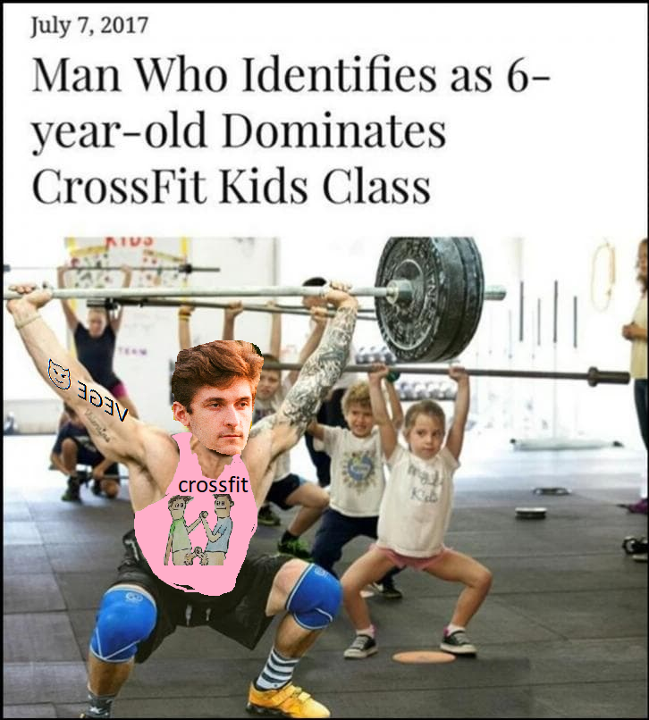
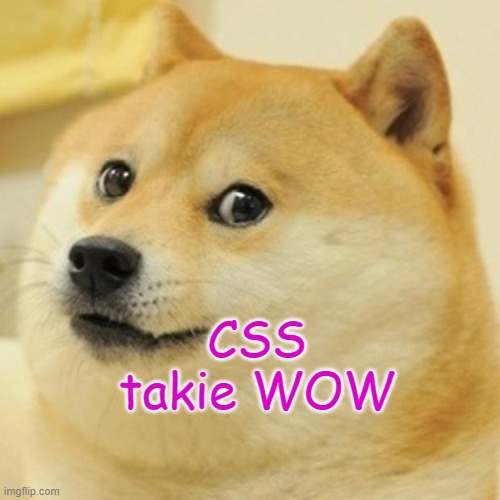

Czesc jestem Moskal crossfitowiec i postanowiłem utworzyć bloka na super temat mojego rzycia

W urokliwym mieście Olsztyn, w Polsce, mieszkał młody dorosły Łukasz, znanego wśród przyjaciół jako Moskal. Moskal był pełen entuzjazmu i energii, żyjąc otwarcie jako gej. Odkrył niedawno pasję do fitnessu i postanowił zgłębić tajniki CrossFitu.
Z pragnieniem nawiązania kontaktu z osobami o podobnych wartościach, Moskal dołączył do lokalnej siłowni CrossFit o nazwie "FitCore". Nie zdawał sobie sprawy, że ta decyzja nie tylko umocni jego kondycję fizyczną, ale także zaprowadzi go do grupy niezwykłych przyjaciół, którzy podzielają jego tożsamość.
Gdy Moskal pierwszy raz przekroczył progi FitCore, został powitany przez zróżnicowaną i przyjazną grupę sportowców. Wśród nich byli Damian, charyzmatyczna i wspierająca jednostka, oraz Kasia, zdeterminowana i odważna zawodniczka. Moskal od razu poczuł więź z ich energią i nawiązał silne połączenie.
Podczas treningów Moskal, Damian i Kasia odkrywali nie tylko wspólną miłość do fitnessu, ale także wzajemne zrozumienie unikalnych doświadczeń i wyzwań, z jakimi boryka się społeczność LGBTQ+. Razem stworzyli przyjazną i otwartą przestrzeń w siłowni, budując poczucie przynależności i wspólnoty.
Podczas przerw między treningami, Moskal, Damian i Kasia często spotykali się w przytulnym kąciku siłowni, aby rozmawiać i dzielić się swoimi osobistymi historiami. Znaleźli ukojenie wiedząc, że mają przyjaciół, którzy naprawdę rozumieją ich życiową podróż i oferują wsparcie, empatię i porady w potrzebie.
Więź między tymi trójką przyjaciół stawała się coraz silniejsza z każdym dniem, dlatego postanowili rozszerzyć swoją przygodę związana z fitness na obszarze poza ścianami FitCore. Organizowali treningi na świeżym powietrzu, wycieczki piesze, a nawet brali udział w lokalnych zawodach sportowych. Wspólna pasja do fitnessu służyła jako katalizator dla ich przyjaźni i stawała się narzędziem ich wzajemnego umacniania.
Poprzez swoje doświadczenia, Moskal, Damian i Kasia stali się źródłem inspiracji dla innych osób z społeczności LGBTQ+, które poszukiwały bezpiecznego i akceptującego miejsca do osiągania swoich celów fitness. Organizowali warsztaty i wydarzenia, aby promować inkl
